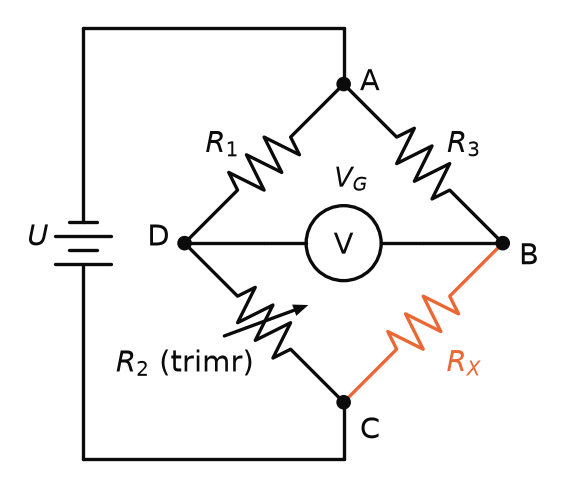

SAD – závěrečná zkouška · Tahák ke zkoušce – SAD · https://balnerm.github.io/pripravy/sad/zkouska/29_tahak.html
Tahák ke zkoušce: vzorce, schémata a chytáky
Stránka na poslední opakování před zkouškou: nejdřív základy, na kterých stojí všechny přednášky, pak to hlavní z každé přednášky. Odkaz u každé části vede na podrobný výklad v kapitole.
Základy (připomenuté v přednáškách)
Obvody a dělič (P1)
| co | vzorec | poznámka |
|---|---|---|
| Ohmův zákon, výkon | \(U = R\,I\), \(P = U\,I\) | kΩ · mA = V |
| sériově / paralelně | \(R_1 + R_2\) / \(\frac{R_1 R_2}{R_1 + R_2}\) | paralelně menší než nejmenší |
| Kirchhoffovy zákony | \(\sum I_\text{dovnitř} = \sum I_\text{ven}\), \(\sum U = 0\) | zachování náboje / energie |
| dělič nezatížený | \(U_2 = U_1 \frac{R_2}{R_1 + R_2}\) | stejný proud oběma R |
| dělič zatížený | \(R_2 \to R_2 \parallel R_\text{z}\) | \(R_\text{z} \geq 10\times\) → chyba < 5 % |
| měkký zdroj | \(U = U_e - R_i I\) | vstupní odpor přístroje \(\to \infty\) |
Operační zesilovač (P1)
Návod na odvození čehokoliv s OZ
- \(U_+ = U_-\) (virtuální zkrat – jen se zápornou zpětnou vazbou a mimo saturaci).
- Do vstupů OZ neteče proud.
- 1. KZ v uzlu invertujícího vstupu + Ohmův zákon → vyjádři \(U_\text{výst}\).
| zapojení | výstup / zesílení | poznámka |
|---|---|---|
| invertující | \(A = -\frac{R_2}{R_1}\) | inverze, i zeslabení; \(R_\text{vst} = R_1\) |
| neinvertující | \(A = 1 + \frac{R_2}{R_1}\) | ZV = dělič; \(A \geq 1\); \(R_\text{vst} \approx \infty\) |
| sledovač | \(U_\text{výst} = U_\text{vst}\) | oddělovač: \(R_\text{vst} \approx \infty\), \(R_\text{výst} \approx 0\) |
| rozdílový | \(\frac{R_2}{R_1}(U_2 - U_1)\) | jen při \(R_4/R_3 = R_2/R_1\); malý \(R_\text{vst}\) |
| přístrojový | \(\left(1 + \frac{2R}{R_G}\right)\frac{R_2}{R_1}\) | zesílení jedním \(R_G\), vysoké CMRR |
| CMRR | \(20 \log_{10} \frac{A_d}{A_s}\) | \(A_s = A_d / 10^{\text{CMRR}_\text{dB}/20}\) |
| integrátor (P4) | \(-\frac{1}{RC}\int u_\text{vst}\,dt\) | R vstup, C ve ZV; obdélník → trojúhelník |
| derivátor (P4) | \(-RC\,\frac{du_\text{vst}}{dt}\) | C vstup, R ve ZV; trojúhelník → obdélník |
Decibely a RC filtry (P2, P5)
| co | vzorec | poznámka |
|---|---|---|
| decibely | \(20\log_{10}|H|\) | 0,707 → −3 dB; 0,1 → −20 dB; 1000 → +60 dB |
| reaktance C | \(X_C = \frac{1}{2\pi f C}\) | nízké f: rozpojeno, vysoké f: zkrat |
| mezní frekvence RC | \(f_c = \frac{1}{2\pi R C}\) | \(X_C = R\), −3 dB, fáze ∓45° |
| DP / HP | výstup na C / výstup na R | sklon \(n \cdot 20\) dB/dek = \(n \cdot 6\) dB/okt |
| pásmová propust | \(B = f_h - f_d\), \(f_0 = \sqrt{f_d f_h}\) | HP + DP za sebou |
| pásmová zádrž (dvojitý T) | \(f_0 = \frac{1}{2\pi R C}\) | příčně \(R/2\) a \(2C\) |
P1 · Signál a jeho převod na napětí (kapitola)
| co | vzorec | poznámka |
|---|---|---|
| akviziční cesta | převodník → úprava → (MPX, galvanické oddělení) → A/D převod | |
| převodník I/U s OZ | \(U_2 = -i_1 R\) | invertující bez \(R_1\); bez úbytku napětí |
| snímací rezistor | \(U = R_\text{SENSE} I\), \(P = R_\text{SENSE} I^2\) | high-side u napájení, low-side u země |
| proudový transformátor | \(I_S = I_P \frac{N_P}{N_S}\) | proudy se transformují obráceně než napětí |
| převodník f/U | \(u_0 = 2\,U_\text{SAT} C_1 R_A f\) | z \(Q_1 = 2C_1U_\text{SAT}\) a \(Q_2 = u_0 T/R_A\) |
| měření odporu s OZ | \(U_X = -\frac{R_X}{R_N} U_\text{REF}\) | konstantní proud \(I_N = U_\text{REF}/R_N\) |
| Wheatstoneův můstek | \(R_X = \frac{R_3 R_2}{R_1}\) | vyvážený: \(R_1/R_2 = R_3/R_X\) |

P2 · Tranzistorové zesilovače a reálný OZ (kapitola)
| co | vzorec | poznámka |
|---|---|---|
| bipolární tranzistor | \(i_C = \beta\, i_B\) | ze slidu β = 384 |
| SE s děličem a \(R_4\) | \(A_u = -\frac{R_3}{R_4}\) | pracovní bod drží dělič a \(R_4\), ne β |
| SC, Darlington | \(A_u \approx 1\), \(\beta \approx \beta_1 \beta_2\) | emitorový sledovač posílí proud |
| laděný zesilovač | \(f_0 = \frac{1}{2\pi\sqrt{LC}}\) | paralelní LC v kolektoru |
| slew rate | \(f_\text{max} = \frac{SR}{2\pi U_p}\) | obvykle 10 V/µs; jinak sinus → trojúhelník |
| šířka pásma se ZV | \(f_M = \frac{\text{GBW}}{A}\) | zisk × šířka pásma = konst. |
| −3 dB | \(20\log\frac{\sqrt2}{2} = -3{,}01\) dB | polovina výkonu, napětí 0,707 |
| komparátor | OZ bez ZV, výstup \(\pm U_\text{SAT}\) | stačí rozdíl desítek µV |
P3 · Napájení a reference (kapitola)
| co | vzorec | poznámka |
|---|---|---|
| chyba v ppm | \(\Delta U = U_\text{REF} \cdot \text{ppm} \cdot 10^{-6}\) | počáteční přesnost → kalibrace |
| dlouhodobá stabilita | \(\text{drift}(t) = k\sqrt{t}\) | \(t\) v kHr; 10 let ≠ 10× rok |
| proč 1,024 V | \(1{,}024\ \text{V} / 1024 = 1\ \text{mV}\) | celé milivolty na úroveň |
| stabilizátor se ZD a OZ | \(U_0 = \left(1 + \frac{R_2}{R_1}\right) U_{ZD}\) | neinvertující zesilovač reference |
| proudové omezení | \(I_{OMAX} = \frac{U_{R_I}}{R_I}\) | \(U_{R_I} \approx 0{,}5\) V otevře \(T_3\) |
| vlečný zdroj | \(U_{o2} = -U_{o1}\) | invertor se ziskem −1 (330k/330k) |
| zdroj proudu | \(I_o \approx \frac{U_\text{REF}}{R_1}\) | ideálně nekonečný výstupní odpor |
P4 · Integrátor, derivátor, usměrňovač (kapitola)
| co | vzorec | poznámka |
|---|---|---|
| Millerův integrátor | \(-\frac{1}{RC}\int u_i\,dt + u_o(0)\) | C = analogová paměť; nulování tranzistorem |
| neinvertující / diferenční | \(+\frac{1}{RC}\int u_i\,dt\) / \(\frac{1}{RC}\int (u_2 - u_1)\,dt\) | |
| zisk integrátoru / derivátoru | \(\frac{1}{\omega RC}\) / \(\omega RC\) | −6 / +6 dB na oktávu |
| ošetřený derivátor | \(\omega_K = \frac{1}{R_1 C} = \frac{1}{R C_1}\) | \(R_1\) do série s C, \(C_1\) paralelně k R |
| precizní usměrňovač | práh \(U_D / A\) | dioda ve ZV se chová jako ideální |
| dvoucestný usměrňovač | \(u_o = |u_i|\) | VA charakteristika ve tvaru V |
| vrcholový detektor | \(u_C = \max u_i\) | D + C drží maximum, sledovač, obnovení nuly přes \(R_V\) |
P5 · Aktivní filtry (kapitola)
| co | vzorec | poznámka |
|---|---|---|
| strmost | \(n \cdot 6\) dB/okt = \(n \cdot 20\) dB/dek | \(A_\text{dek} \approx 3{,}32 \cdot A_\text{okt}\) |
| normovaná DP | \(\frac{A_0}{1 + a_1 s + b_1 s^2}\) | HP: \(s \to 1/s\) = záměna R a C |
| Sallen-Key / MFB | neinvertující, kladná ZV / invertující, dvě zpětné vazby | |
| činitel jakosti | \(Q = \frac{f_m}{B} = \frac{1}{\Delta\Omega}\) | úzká propust / zádrž = velké Q |
| aktivní dvojitý T | \(Q = \frac{1}{2(2 - G)}\) | \(G = 1 + R_2/R_1\); zádrž 50 Hz |
| aproximace | Butterworth: ploché pásmo · Čebyšev: strmost se zvlněním · Bessel: lineární fáze | |
P6 · Komparátor, omezovač, A/D převod (kapitola)
| co | vzorec | poznámka |
|---|---|---|
| precizní omezovač | \(u_o = u_i\) do meze \(U_\mathrm{REF}\) | ZV za diodou; obrácená dioda = druhá strana |
| Zenerky v můstku | \(\pm(U_Z + 2U_D)\) | symetrické meze |
| chyba přeběhu komparátoru | \(U_\mathrm{SAT}/A_u\) | rušení u prahu → falešná překlopení |
| Schmittův KO | \(U_H = (U_\mathrm{SAT}^+ - U_\mathrm{SAT}^-)\frac{R_1}{R_1 + R_2}\) | \(U_\mathrm{REF}\) jen posouvá střed prahů |
| kvantizační krok | \(q = \frac{U_\mathrm{REF}}{2^n}\) | vzorkování = čas, kvantování = amplituda |
| flash ADC | \(2^n - 1\) komparátorů | termometrický kód → kodér; nejrychlejší |
Nejčastější chytáky
Na co si dát pozor u zkoušky
- Neinvertující zesílení je \(1 + R_2/R_1\), invertující \(-R_2/R_1\) (se znaménkem).
- Virtuální zkrat platí jen se zápornou zpětnou vazbou; komparátor (bez ZV) a Schmittův KO (kladná ZV) ho nemají.
- Saturace: výstup OZ nepřekročí napájení, ať vzorec dá cokoliv.
- −3 dB = polovina výkonu, ale napětí 0,707; poloviční napětí je −6 dB.
- dB u napětí (zesílení, CMRR) vždy \(20\log\), u výkonu \(10\log\).
- \(f_c\) vs. \(\omega_c\): \(f_c = 1/(2\pi RC)\) v Hz, \(\omega_c = 1/(RC)\) v rad/s.
- Dolní vs. horní propust: rozhoduje, na které součástce je výstup – na C = dolní, na R = horní.
- Pásmová propust = filtry za sebou; zádrž = vedle sebe nebo dvojitý T.
- Zatížený dělič: zátěž je paralelně k \(R_2\); biozdroj je měkký, proto velký vstupní odpor.
- Převodník f/U: ve výsledku je \(R_A\) (vybíjecí), ne \(R_1\) – výsledek odvoď z rovnosti nábojů.
- Dlouhodobá stabilita roste s \(\sqrt{t}\), ne lineárně.